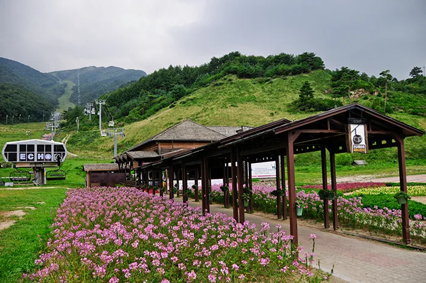
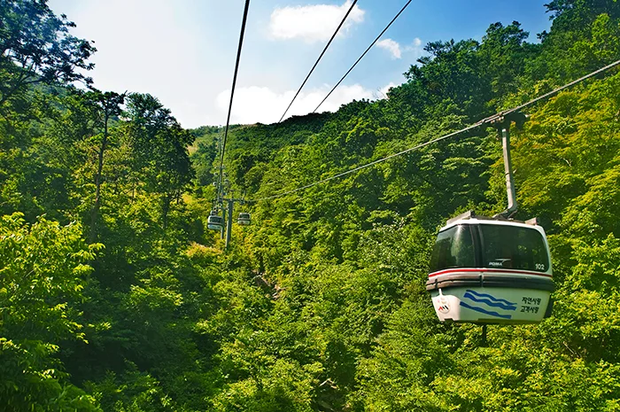
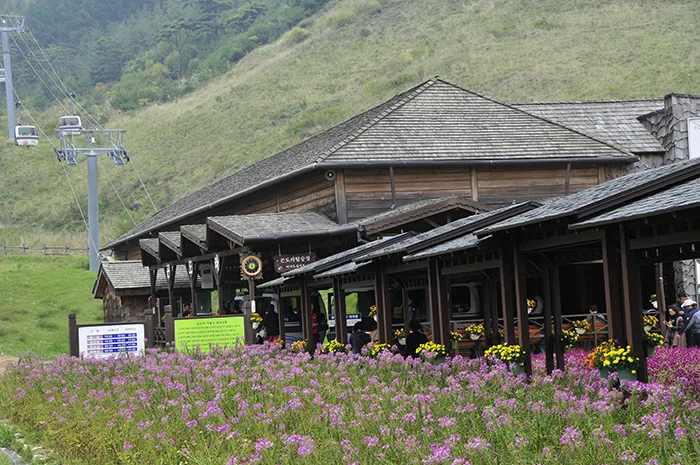
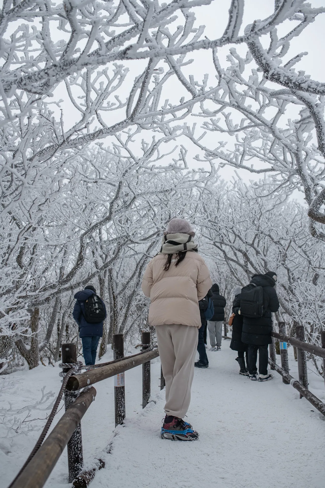

▲ 설천봉에서 향적봉으로 오르는 탐방로. 겨울에는 상고대가 이 길을 뒤덮는다 ⓒ 조선일보
1. 곤돌라 요금과 예약 규칙
관광곤돌라 일반 요금은 대인 기준 왕복 25,000원, 편도 20,000원입니다. 소인은 왕복 20,000원, 편도 16,000원입니다.
| 구분 | 왕복(대인/소인) | 편도(대인/소인) |
|---|---|---|
| 일반 | 25,000원 / 20,000원 | 20,000원 / 16,000원 |
| 콘도 회원 | 17,500원 / 14,000원 | 14,000원 / 11,200원 |
예약 규정은 시기에 따라 다릅니다. 3~9월에는 사전 예약제를 운영하지 않아 현장 발권만으로 이용할 수 있습니다. 반면 10월부터 다음 해 2월까지는 주말·공휴일에 한해 탑승일 2주 전 오후 5시부터 예약해야 하고, 리조트 투숙객은 투숙일 잔여석에 한해 즉시 예약할 수 있습니다. 같은 기간 주중에는 현장 발권으로 이용 가능합니다.

▲ 곤돌라 정류장 주변. 계절마다 꽃과 풍경이 바뀐다 ⓒ 무주덕유산리조트
2. 곤돌라가 데려다주는 곳은 정상이 아니다
곤돌라는 해발 1,520m 설천봉까지만 갑니다. 덕유산 정상인 향적봉은 설천봉에서 별도 탐방로를 걸어야 닿을 수 있습니다.

▲ 무주덕유산리조트 관광곤돌라. 여름에는 녹음 위를 지난다 ⓒ 무주덕유산리조트
설천봉~향적봉 구간은 0.6km, 왕복 약 40분이 걸립니다. 짧은 구간이지만 이 구간에는 국립공원 탐방예약제가 적용될 수 있습니다. 곤돌라 표를 샀다고 자동으로 향적봉까지 갈 수 있는 게 아니라, 국립공원 예약시스템에서 별도로 확인하고 예약해야 하는 구조입니다.
3. 설천봉 정류장, 사계절이 다르다
설천봉 정류장 주변은 여름과 겨울의 풍경이 완전히 다릅니다. 여름에는 정류장 주변에 야생화가 피고, 겨울에는 상고대가 나뭇가지를 뒤덮습니다.

▲ 여름철 설천봉 정류장. 겨울 눈꽃 명소로 알려졌지만 계절마다 표정이 다르다 ⓒ 무주덕유산리조트
4. 겨울 상고대, 대표 이미지의 정체
덕유산 하면 떠오르는 눈꽃 사진은 대부분 이 설천봉~향적봉 구간에서 찍힌 것입니다. 상고대가 낀 나뭇가지 터널을 걸어가는 탐방객들의 모습이 겨울철 상징 장면으로 꼽힙니다.

▲ 상고대가 낀 나뭇가지 터널. 겨울 덕유산의 대표 이미지다 ⓒ 조선일보
겨울철 주말은 방문객이 몰려 예약이 특히 빨리 마감됩니다. 10~2월 주말 예약이 열리는 2주 전 오후 5시에 맞춰 접속하는 편이 안전합니다.
5. 자차 여행자를 위한 정리
첫째, 10~2월 주말·공휴일이라면 곤돌라부터 2주 전에 예약하십시오. 이 기간 주말은 현장 구매만 믿고 갔다가 표를 못 구하는 경우가 있습니다. 3~9월과 겨울 주중에는 예약 없이 현장에서 바로 살 수 있습니다.
둘째, 향적봉까지 올라갈 계획이라면 국립공원 예약을 따로 확인하십시오. 곤돌라 표와는 완전히 다른 시스템입니다.
셋째, 왕복 요금이 편도보다 확실히 유리합니다. 걸어 내려올 계획이 없다면 왕복으로 끊는 편이 낫습니다.
넷째, 설천봉 정류장 자체도 계절마다 볼거리가 다릅니다. 향적봉까지 못 가더라도 정류장 주변만으로도 여름·겨울 풍경을 즐길 수 있습니다.
정리하면 이렇습니다. 덕유산 곤돌라는 정상까지 데려다주는 표가 아닙니다. 설천봉에서 향적봉으로 넘어가려면, 표 한 장을 더 챙겨야 합니다.